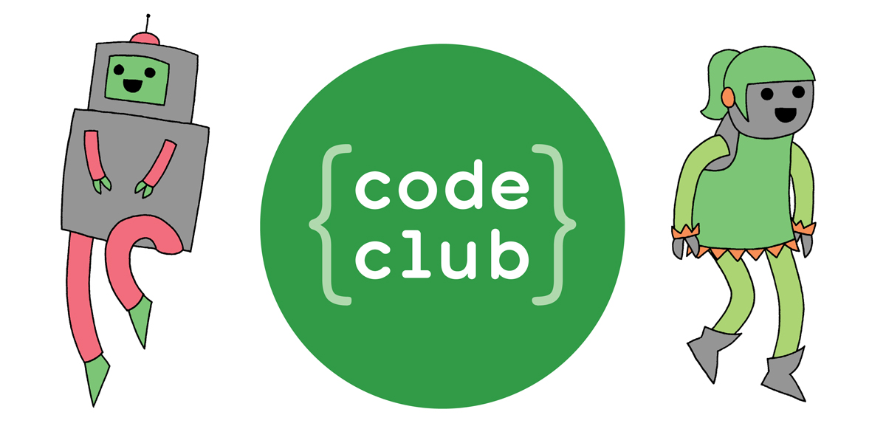

WHOAMI

- www.coding2learn.org
- @coding2learn
- github.com/MarcScott
Kids love code

The Kids

The Parents

The Teachers

Summary

Raspberry Pi

The Raspberry Pi

Zero

SenseHAT

Camera

MagPi

Raspberry Pi


The Raspberry Pi Foundation
- An educational charity
- Founded in 2009
- Putting the power of digital making into the hands of people all over the world.
- One way we do this is by making low-cost computers and out first went on sale in February 2012
- As of March this year, we've sold 12.5 million.
What we do with all that money

Resources

Teacher Training

Outreach

Jam support

Projects

Extra Curricular

Open Source Software

Open Educational Resources

Generating resources

Start a project

Create a repo

Clone

How we make content

Markdown

How it looks

How our community engages with us and how you can to

Issues

Pull requests

Contributions

- Have a look through out repos -learn our style
- Make your own resource
- Submit to us
A Cheeky Request
Volunteers can help

Code Club - What?

Code Club - Where?

Code Club - How?

Pioneers

The Process